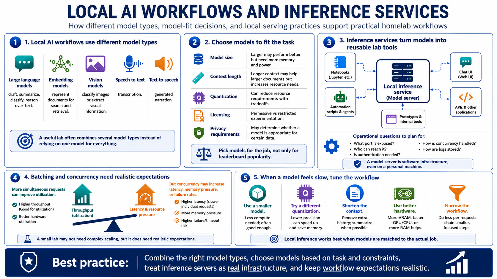

Local Models and Inference Services
Connecting to LMS... Progress: in progress

Narration
Local AI workflows may use large language models, embedding models, vision models, speech-to-text, and text-to-speech. Each model category supports different tasks. A language model may help draft, summarize, classify, or reason over text. Embeddings help represent documents for search and retrieval. Vision models can classify images or extract visual information. Speech models support transcription and generated narration. A useful lab often combines several model types rather than relying on one model for everything.
Model size, context length, quantization, licensing, and hardware fit all matter. A larger model may perform better on some tasks but require more memory and power. A longer context window may help with larger documents but increase resource needs. A permissive license may support experimentation that a restricted license does not. Privacy requirements may determine whether a model is appropriate for certain data. Model selection should be based on the task, not only leaderboard popularity.
Inference services make models available to applications through local APIs or web frontends. This can turn a one-off model into a reusable lab service for notebooks, automation, chat interfaces, and prototypes. Serving introduces operational questions: what port is exposed, who can reach it, whether authentication is needed, how concurrency is handled, and how logs are stored. A model server is software infrastructure, even when it runs on a personal machine.
Batching and concurrency should be understood at a high level. Running multiple requests at once can improve utilization, but it may increase latency, memory pressure, or failure rates. A small homelab may not need complex scaling, but it does need realistic expectations. If a model is slow, the answer might be a smaller model, a different quantization, a shorter context, better hardware, or a narrower workflow. Local inference works best when models are matched to the actual job.